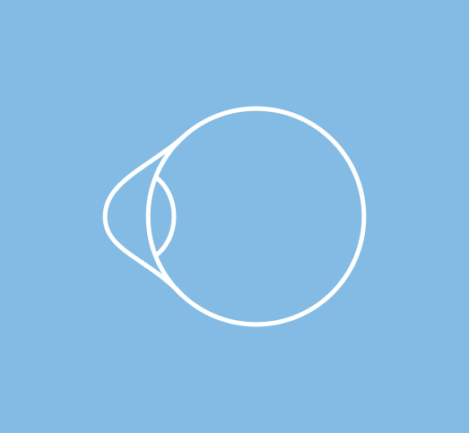

Keratoconus
Keratoconus is a condition in which the cornea, the clear window at the front of the eye, thins and bulges into a cone shape, distorting vision. Detecting it early is vital because corneal cross-linking can halt its progression, and QEI's corneal surgeons pioneered new treatments such as CAIRS in Australia.
At a glance
- Usually starts in the teens or twenties and can progress until the mid-30s.
- First sign is often rapidly changing astigmatism that glasses no longer correct well.
- Eye rubbing and allergy are important, avoidable contributors.
- Cross-linking halts progression; CAIRS, specialised lenses and, rarely, transplant improve vision.
- Sudden, painful clouding of the cornea with a sharp drop in vision (corneal hydrops)
Call us on 07 3239 5000 during clinic hours, or go to your nearest emergency department. See emergency eye care.
What is keratoconus?
The clear window at the front of the eye is called the cornea. Our cornea should be round like a soccer ball; in keratoconus it thins and becomes shaped more like a cone or a rugby ball. The first sign is often an increase in astigmatism, which can initially be corrected with glasses, but as keratoconus progresses vision becomes distorted to a degree that glasses cannot fix.
Keratoconus usually begins in the teens or twenties and can progress until the mid-30s, when the cornea naturally stiffens. Detecting the condition early is vital, as treatments such as corneal collagen cross-linking can halt its progression.
Symptoms
- Blurred and distorted vision with ghosting or multiple images.
- Frequent changes in glasses or contact lens prescription, with increasing astigmatism.
- Glare, halos and light sensitivity, especially at night.
- Difficulty achieving clear vision with glasses.
Causes and risk factors
Keratoconus results from a combination of genetic and environmental factors. It often runs in families, so family members should be checked by their optometrist. Eye rubbing is a major factor: many people with keratoconus rub their eyes because of allergies, and rubbing weakens the cornea. Allergic eye disease, atopy and conditions such as Down syndrome increase the risk.
Diagnosis
The signs of keratoconus can generally be detected by your optometrist with routine screening. The diagnosis is confirmed with corneal topography and tomography, which map the shape and thickness of the cornea in detail. Repeating these scans over time shows whether the condition is progressing and guides treatment.
Treatment at QEI
QEI's corneal surgeons are international leaders in keratoconus care and offer the full range of treatments:
- Stop eye rubbing and treat allergy. This is the first step for everyone.
- Glasses and contact lenses. Soft, rigid gas-permeable, hybrid or scleral lenses can give excellent vision by creating a smooth new surface over the cornea.
- Corneal collagen cross-linking uses riboflavin drops and ultraviolet light to strengthen the cornea and halt progression. QEI offers topography-guided cross-linking that customises the treatment to your cornea.
- Topography-guided laser combined with cross-linking (the "Athens protocol") regularises the corneal surface to improve vision while strengthening the cornea. How it works at QEI Laser.
- CAIRS (corneal allogenic intrastromal ring segments), in which segments of donor corneal tissue are implanted to flatten and regularise the cone. QEI's Dr David Gunn and Dr Brendan Cronin pioneered CAIRS in Australia and developed the CAIRS planning platform used by surgeons worldwide.
- Corneal transplantation (deep anterior lamellar keratoplasty or penetrating keratoplasty) for advanced disease where other treatments cannot restore vision.
Living with keratoconus
Keep up regular reviews with topography, protect your eyes from rubbing, manage allergies, and see your contact lens practitioner for well-fitted lenses. Read Sarah's story about CAIRS at QEI.
Frequently asked questions
Can keratoconus be cured?
There is no cure, but modern treatment is very effective. Corneal cross-linking strengthens the cornea and stops the condition worsening in most cases, and procedures such as CAIRS and topography-guided laser can improve the shape of the cornea and vision.
Should my family be checked?
Yes. Keratoconus often runs in families, so parents, siblings and children of people with keratoconus should have corneal screening with their optometrist, including topography where available.
Why is eye rubbing so important?
Rubbing the eyes, often because of allergy, mechanically weakens the cornea and is strongly linked with keratoconus developing and progressing. Treating allergy and breaking the habit of rubbing is one of the most valuable things you can do.
Concerned about keratoconus?
Ask your GP or optometrist for a referral to QEI, or call our team to discuss an appointment with a specialist.
This information is general in nature and does not replace advice from your own doctor or optometrist. If you are worried about your eyes, please call us on 07 3239 5000.